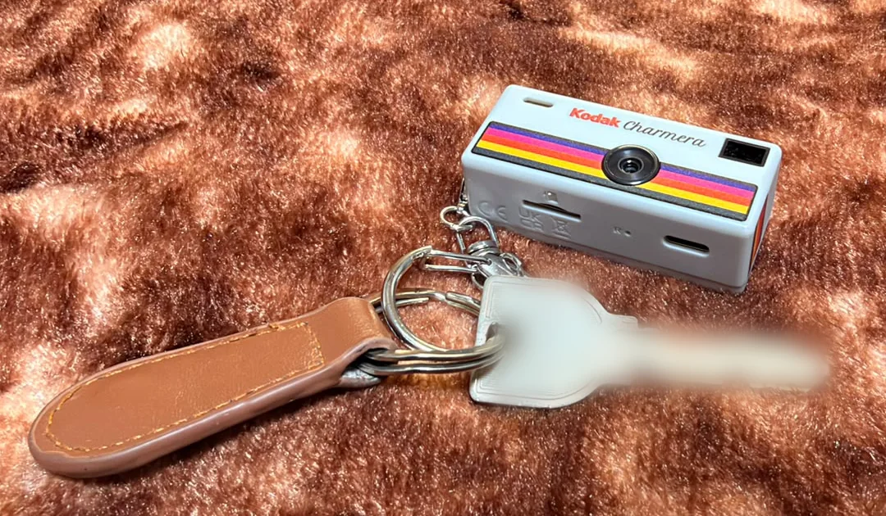
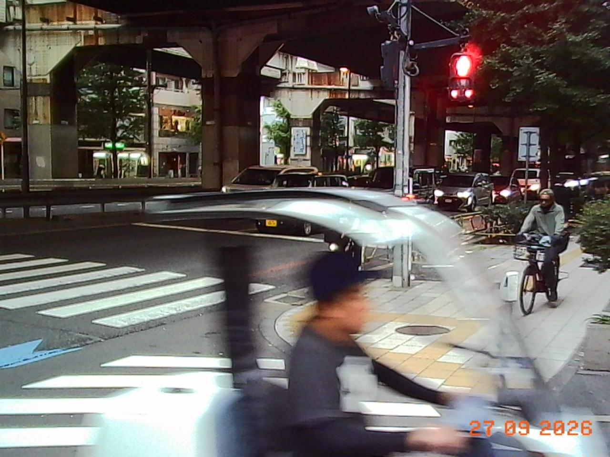
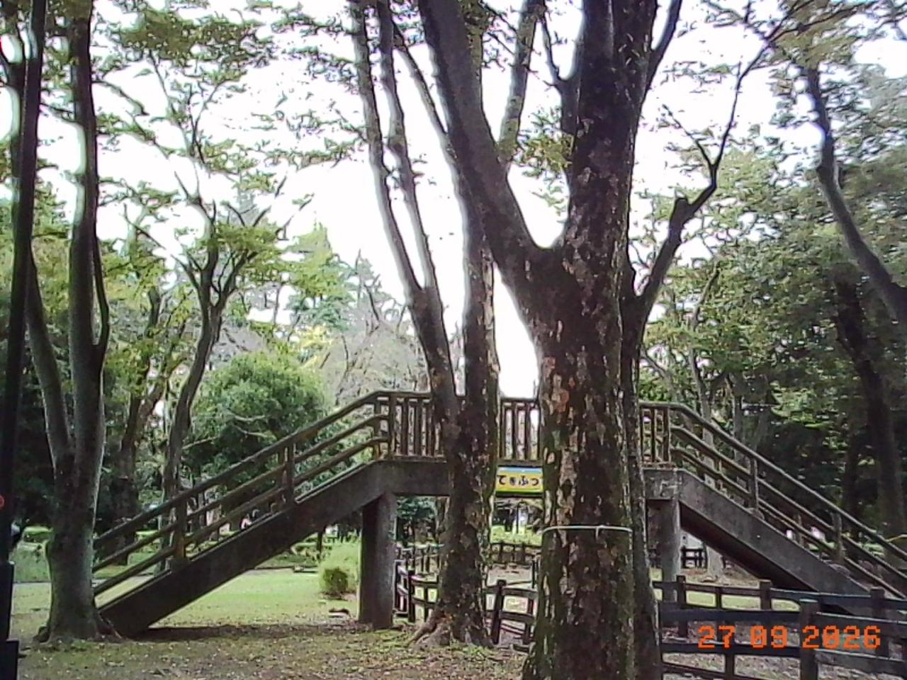
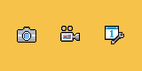
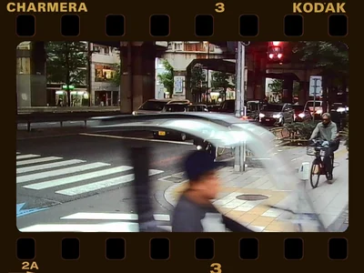
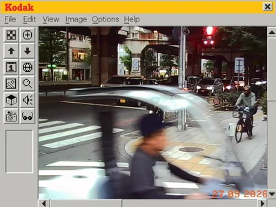
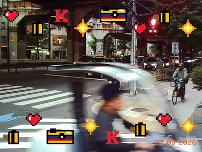
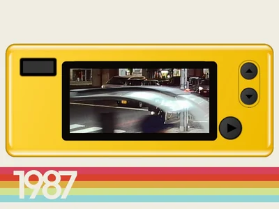

Better Taste for a Tiny Camera
Inside a $30 keychain hit: what its firmware does to a photograph, and how to compile better taste into it
The Charmera’s firmware knows seven photo sizes. The largest is 4960 × 3720, about eighteen and a half megapixels. Every one of them is made from the same 800 × 600 image.
Kodak’s Charmera is a digital camera small enough to hang from a keychain. It has a fixed lens, a small noisy sensor, a direct flash and almost no settings. I want it to pass one test: a moment happens, I press the shutter without ceremony, and later the JPEG is something worth keeping.

That test sent me through film emulation, colour science and a 2 MiB firmware image. The rule I settled on early was:
Don’t remove the Charmera from the photograph. Give the Charmera better taste.
This essay follows the questions in the order I had to answer them. Each answer raised the next one.
What is this thing, and why did it hit?
The Charmera isn’t made by Kodak. It comes from Reto, a small Hong Kong company that began with a three-lens 3D film camera, crowdfunded on Kickstarter in 2019, and since 2022 has made retro film cameras under a Kodak licence. The Charmera is a tribute to the Kodak Fling, Kodak’s first disposable camera; the yellow model swaps the Fling’s “200” for “1987”, the year the Fling came out and the year printed on one of the camera’s own frames. It went on sale on 9 September 2025 at $29.99, in blind boxes: you get one of six designs, or, in about one box in 48, a clear “secret” edition. It sold out within a day, and Reto said demand was about ten times what it had planned for. Restocks came in rounds, resale listings ran at several times the price, and an official distributor took it into Japan.
Reto has never said how many it has sold. Kodak’s royalty income gives a rough bound, and my working estimate is about a million in the first year.
Reto doesn’t make the electronics, and apparently not the software either. The chip is a Generalplus camera processor. The firmware’s own build strings name what looks like a factory project, JH5408, built on a Generalplus reference kit from 2019; the words Reto and Kodak appear nowhere in the code. The founders keep a low profile, and most of what is public comes from marketing. Working up from each supplier’s own prices, I estimate Reto pays its factory about $3.60 a camera, parts, assembly and the factory’s margin included: around 12% of the $29.99 price. The rest of the value is the Kodak name, the blind box and the timing.
Timing matters in this market. Camp Snap’s screen-free CS-8 video camera sold $20 million in eleven months, by the company’s account, and nearly sold out again after Taylor Swift was seen filming with one in December 2025.
In June 2026 Reto followed up with the Charmera Millennium Edition. The core hardware is the same. What’s new is the shells and the software: four new frames and seven new filters, including Pixel filters in coral, honey, teal and violet. The thing that makes a new Charmera new is software, but a Charmera already on someone’s keys can’t get it. Its looks are fixed at the factory, compiled into the firmware with everything else.
The spec sheet checked line by line, the parts, the cost table and how these estimates were made are in a companion field guide, The Charmera, Inside and Out.
So here was a $30 camera built from a few dollars of standard parts, sold by the hundreds of thousands at least, whose software is the product and is frozen at the factory. The next question was whether anyone could get inside it.
Can anyone get inside it?
Yes, and someone already had. Project Sirius published a dump of the Charmera’s firmware: the whole 2 MiB flash chip, read straight off a camera. It runs on a Generalplus GPCV2247F, an ARM7 chip. There is no Linux or shell to log into, so understanding it meant disassembling it. I ran the original instructions in an emulator, one routine at a time, with the hardware around them modelled explicitly.
Getting changes back in is the harder half. There are two ways. One is an update file on the memory card. The other is USB: the camera speaks a protocol with memory commands, but the stock handshake grants access level 1 and the memory commands require level 2. Changing a single mov r0, #1 to #2 opens them in emulation, but getting that one byte onto the camera is the same installation problem as everything else. Underneath both, the flash chip itself can be read and reprogrammed directly, which is how a bricked camera was recovered and how a backup can be made.
Inside the 2 MiB
Everything the camera does, and anything I change, has to live in one 2 MiB flash chip. Here is the whole image as a map. Hover over a region, or focus the map and use the arrow keys, to see what it holds.
- Program
- Resources
- Camera state
- Photos (not shown)
- Final erase
Show every region as a table
| Range | Region | Size | What it holds |
|---|
The bug that wasn’t
The card route gave me the most instructive mistake of the project. The firmware looks for a file on the card named JH_5408, followed by a timestamp and a checksum that is simply the sum of the file’s bytes. A community member had already reported that updating this way bricked a camera, which then needed its flash chip reprogrammed directly. I ran the original updater in the emulator with a full 2 MiB image. After writing every block and verifying it, the updater issued one more erase, at an address 64 KiB past the end of the 2 MiB chip. If the flash controller wraps that address around, it erases the block at 64 KiB, which is part of the firmware itself. That looked like a smoking gun.
Then I looked at what else the 2 MiB dump contained. The firmware’s resources end at 0x168E92. Above that sit the camera’s live state: append-only settings records at 0x170000, a saved-photo index at 0x17F000, and two 960 × 720 JPEGs taken by whoever owned the dumped camera. A full dump isn’t an update package. It is software plus one camera’s settings and photographs.
So I asked what a package of only the software would look like; flip the map between the two. Padded to the next 512-byte sector, it ends at 0x169000, and the updater’s mysterious final erase then lands exactly on 0x170000: the settings block. I ran the original settings and photo-index routines on the result. The settings reader finds no valid record, the firmware takes its own existing reset path, and the photo index is rebuilt empty. The final erase looks like a factory reset, not a bug.
Two of my earlier recommendations would have made things worse. Deleting the erase would have removed the reset. A guard I had proposed against short reads would have rejected the final, legitimately shorter read of a resource-sized package. The cause of the reported bricking is still unconfirmed. It needs a real factory update or a before-and-after dump of a failed camera, not more emulation.
The lesson was about evidence. “Preserve every non-blank byte” sounded like the safe success criterion, but it would have preserved someone else’s photographs and broken the reset the update intended.
So there is a way in, and it needs care. Before changing anything, I wanted an exact account of what the firmware does with a photograph.
How does it make a photo?
With the firmware running in an emulator, the next question was the plain one: what happens between the button and the JPEG? This part is the mental model of the camera, stage by stage, and which piece of the firmware owns each one.
What happens when you press the shutter
Here is the still path as the firmware runs it. Step through it. The yellow box follows the same patch of the scene, and the loupe shows that patch at each stage’s own resolution.
The middle stage is the surprise. The sensor runs a 1280 × 720 mode. The firmware keeps the centre 960 × 720 and resamples it onto 480,000 pixels. Whatever detail the photograph has, it has at 800 × 600. The saved file is 1440 × 1080 by default. The larger configurations are enlargements of the same surface, and I haven’t established that the menu can even reach all of them.
This was the first fact that changed the project. A film renderer for this camera never has to touch more than 480,000 pixels, and the firmware already has a place, at that size, where it runs CPU code over the whole image. I’ll come back to that place, the hook, because everything depends on it.
What comes out
Here are two photographs from my Charmera, both from 27 September 2026.


They look like a Charmera. The red light glows, the cyclist smears across a slow shutter, the shadows go green-black, and the branches carry bright halos against the white sky, probably from in-camera sharpening. And in the corner sits the orange date stamp.
Do they really hold only 800 × 600 of detail? Recompression can remove detail but can’t add it, so these copies can still answer that. I measured how much detail each photo holds at every scale, from coarse shapes to the finest texture. As a control, I sent four of my phone photos through the same resizing and recompression, once as they are and once squeezed through 800 × 600 first.
- Charmera (2 photos)
- Phone through 800 × 600 (4)
- Phone (4)
The measurement could not be loaded.
Show each photo as a table
| Source | Photo | 200–300 | 350–400 | 400–500 |
|---|
Just short of that limit, my phone photos keep 26–73% as much energy as in their coarse structure. The phone photos squeezed through 800 × 600 keep 3–13%. The Charmera photos keep under 2%, less than the squeezed phone photos. That is consistent with the firmware’s 800 × 600 surface, with the lens and in-camera noise reduction taking a little more. On its own it can’t say which of those sets the limit, but the firmware already has: nothing finer than 800 × 600 survives.
The filters it already has
The camera’s existing filters come in two kinds, and the difference between them decided the architecture.
Standard, Warm, Cool and B&W are hardware settings. They set offsets and scales on the colour processor’s chroma channels, and B&W zeroes them. Standard isn’t even a fixed setting. Its saturation steps down as the scene gets darker, through codes 40, 37, 35, 32 and 30. If 32 is unity, that’s about 1.25× in good light falling to about 0.94× in the dark, probably to keep chroma noise down. Nothing in the menu hints at it.
The four Pixel filters are software. A CPU loop walks the image two pixels at a time. Each pixel whose brightness is 124 or more becomes a flat palette colour; anything darker becomes black. I wanted to be sure, so I ran the original loop on test patterns in the emulator and checked my reimplementation against its output, including the exact threshold. You can try it in the darkroom further down.
That test turned up a quirk. The two pixels in each pair share one colour pair, but each pixel writes only its own half of it. When a bright pixel sits next to a dark one, the pair ends up with half a palette colour, and edges grow thin fringes in colours that aren’t in the palette. The retro filters have a small, accidental chromatic aberration.
The Pixel filters are crude, but their existence is the most useful finding in the whole project. They prove that the firmware already pauses after capture to run arbitrary CPU code over every pixel. That happens before the frame, the date and the JPEG encoder, which is exactly where a film renderer would go. Executing the original capture dispatcher found a candidate insertion point just after the Pixel path cleans up and just before the overlays. It is a logical location, not yet a patch.
How the camera spends light
Colour is half of how a photograph looks. The other half is exposure.
The sensor was identified from its own start-up program rather than from photographs of the circuit board. Tracing the real control bus, two GPIO pins bit-banging a camera-control protocol, recovered the 61 register writes the firmware sends at power-on. They are stored as plain byte pairs, register then value, and begin like this:
FD 00 2F 1B 2E 01 33 00 30 2C
FD 01 09 00 0A 78 05 01 06 DA
03 00 04 BB 24 20 …FD selects a register page. On page 1, registers 03 and 04 hold the integration time and 24 the analog gain. That sequence matched the open-source drivers for the SP140A sensor family. The camera’s live exposure writes landed on the same chip’s integration-time and gain registers.
Auto-exposure doesn’t solve for shutter speed and gain directly. It moves an index along a program line, a table of roughly one-twentieth-stop steps. Each entry says how long to integrate, how much analog gain the sensor applies, and how much digital gain the colour processor adds. There are two tables, one for 50 Hz mains and one for 60 Hz.
- Shutter
- Sensor gain
- Digital gain
The exposure tables could not be loaded.
Show the shutter plateaus as a table
| AE index | Lines | Sensor gain | Digital gain |
|---|
The shape tells you the camera’s priorities. In bright light it only shortens or lengthens the exposure. Once exposures get long enough, integration time is allowed only a few values: multiples of about 240 lines on the 50 Hz table and about 167 on the 60 Hz table. That is the pattern you’d expect from anti-flicker steps of 10 ms and 8.33 ms, which keep fluorescent light from banding. The exact line period hasn’t been measured, though, so the milliseconds are an inference.
Between those steps the camera holds the shutter and raises sensor gain. Then it jumps to the next step and gives most of the gain back, which is the sawtooth where the bands meet. After the longest step, gain is all that’s left. The 50 Hz table also keeps digital gain in reserve for the darkest scenes.
The third column puzzled me for a while. It looked like an unused gain-like number until I followed it to a hardware register: the colour processor’s global gain. The exposure system has three stages, not two. The tables also have small oddities. At one of those jumps on the 50 Hz table, from index 140 to 141, nominal exposure actually falls by about a sixth of a stop. That is real in the codebook, but I haven’t tested whether it matters in practice.
The curve that meters
The most important finding about exposure came from the tone curve.
The camera stores its gamma curve as 128 packed words. The firmware writes them to the colour processor’s gamma memory. It also decodes them into 1,024 values and samples every fourth one into a 256-entry table inside the auto-exposure engine. The engine passes every metering cell through that table before judging brightness. The curve is not only how the photograph looks. It is how the camera decides how bright the scene is.
The stock curve lifts shadows hard: a raw statistic of 16 reads as 63, and 64 reads as 149. Feed the original engine a uniform scene at 64 and it decides to brighten without the curve and to darken with it. The direction flip survived when the test was repeated with the camera’s own configuration: target 120, a metering mode that discards outliers, and the recovered window geometry.
You can’t change the look without changing the exposure. A film curve loaded into the gamma slot would quietly retune auto-exposure for every photograph. That is a strong argument for the hook. A look applied to the already captured 800 × 600 surface leaves metering alone, and exposure can become a deliberate, separate choice per mode. The firmware already has the knob for that: a 13-step table that scales the brightness target from 205 down to 47, around a default of 120. A night mode, for example, could pick a different step, or accept more noise in exchange for less blur.
That is the whole path. It has two kinds of control: settings the firmware owns and adjusts as it goes, like the filters, the program line and the tone curve, and a place after capture where code can touch every pixel. The next question is which of them can be changed without risking the camera.
What could we change, and how safely?
The aim was the largest change for the smallest edit to the program. So for every piece of the camera worth changing I asked the same questions: who creates it, who reads it, who updates it, and when it gets reset. Start with what already sits in the flash as plain data.
The camera’s own resources
The program takes up most of the flash. The rest is the camera’s whole interface: icons, screens, menu text, the four frames and their thumbnails, and a few small things you can still play. The art is stored as compressed 16-bit colour pixels, and most of it is drawn for a 160 × 80 screen, the size of the startup logo.

HomeThe 121 KiB block the map labels Menu text holds every string the interface can draw, in 14 languages. The English set has 155 entries, and it reads like the manual of a different product: Loop recording, Motion Detection, 2.5K, 1080P, WIFI download, MP3, and a factory screen called Key And USB Test. A string table shows what the software was built from, not what the Charmera puts on its screen, and I haven’t traced which of these strings it ever shows. It isn’t only text, though. The program carries the vendor kit’s complete Wi-Fi driver and network stack, for a radio the Charmera doesn’t have. Together they are the clearest sign of the platform under the Kodak skin: a generic small-camera firmware, configured down to a keychain.
- Power on8 kHz, 8-bit, 0.76 s
- Power off8 kHz, 8-bit, 1.05 s
- IMG11 kHz, 8-bit, 0.50 s
- Click8 kHz, 8-bit, 0.24 s
- Beep11 kHz, 16-bit, 0.18 s
Frames
The four frames are the richest of those resources, and a third kind of look after the hardware filters and the Pixel filters. Here they are, decoded from the firmware and laid over my street photo by the camera’s own rule.




Each frame is an 800 × 600 image in exactly the same row-pair layout as the capture surface. Each is split into three 200-row strips, compressed with DEFLATE behind a GPZP tag.
Frames are drawn after the hook, so a film look would never tint them, and they have no alpha channel. To find out how the camera decides what is see-through, I ran its own frame routine on test patterns. This is the test, four instructions in the routine at 0xEDA4:
ldrh r1, [r0] ; two lumas
sub ip, r1, #0x8c00 ; minus 0x8C8C
subs ip, ip, #0x8c ; (140, 140)
beq skip ; keep photoIt walks the image a pixel pair at a time and leaves the photo alone wherever both of the frame’s brightness values are exactly 140. Colour isn’t checked at all. A frame drawn in bright red that happens to have a brightness of 140 would show the photo straight through it.
Every strip also has a fixed slot in flash, between 2 KB and 19 KB. The slots are packed back to back, each just the stock strip rounded up to the next 512-byte sector, so the stock frames fill them almost to the byte. A custom frame with the same layout and compression that fits its slots would change nothing else in the firmware. So here is a frame maker.
Stock frames, from the firmware
Make your own
| File | Encoded | Slot | Result |
|---|
Menu thumbnail, 112 × 80. A stock frame keeps the camera's own; yours is generated from the frame, with see-through areas in the key grey.
Start from a stock frame to see the camera’s own budget in action, then try a template or your own PNG. The table shows whether each strip, and the menu thumbnail, fits the slot you choose. Detail costs bytes: the middle strips of slots 1 and 3 have only 2 KB, so the middle of those frames has to be almost all see-through. When installation is solved, this part is ready.
A customisation plane
Put together, the firmware answers one question for each thing worth changing: where does it live, what reads it, and what changes it? If changing a look means patching code scattered through the program, every update risks the camera. If it means replacing data the program already reads, the risk shrinks to a known format, a fixed slot and a checksum.
| Thing | Lives in | Read by | Changed by |
|---|---|---|---|
| Frames | Twelve compressed strips in the resources, each in a fixed slot | The frame routine, at every capture | An update |
| Frame thumbnails | Four 112 × 80 images in the resources | The frame menu | An update |
| Tone curve | Calibration data, inside the program image | Metering and the image processor | An update; it retunes exposure too |
| Exposure character | The 13-step target table and the 50/60 Hz program lines, inside the program image | Auto-exposure | An update |
| Pixel filter colours | Constants inside the Pixel routine’s code | The Pixel routine | A code patch |
| Film look | Nowhere yet | A hook at the 800 × 600 surface, not yet built | One code patch, then data |
| Your settings | Append-only records at 0x170000, checked with CRC32 |
Start-up and the setup menu | The setup menu; reset by a software update (in emulation) |
Most of what people would want to change is already data. Frames, thumbnails, the tone curve and the exposure tables sit at known places, in formats this essay has decoded. The curve and the tables happen to live inside the program image, so a checker has to know exactly which of those bytes are data and which are code. The film look is the exception. It needs one program change: a hook after capture that reads a look from a data slot, the way the frame routine reads a frame.
The vendor seems to have half-expected this. The firmware contains routines that open time.txt and pwd.txt from the memory card and parse what they read, and nothing in the firmware calls them. Reading settings from the card is a pattern the platform already knows.
That suggests the shape of a customisation plane. Change the program once, verify it byte for byte, and freeze it. After that, every customisation is a data package: a look, a frame and its thumbnail, an exposure step. Each has a fixed slot, a size budget and a checksum, and each is checked on a computer before it reaches the camera. The frame maker above already works that way. It refuses anything that doesn’t fit its slot and proves that every file inflates back to the exact bytes. An owner’s camera could then keep getting better without anyone patching code again. It is the separation Camp Snap’s filter files make, applied to a camera whose maker never planned for it.
That is what could change, and how safely. Whether it is worth doing is a separate question.
Why is that worth doing?
The usual way to stay in the zeitgeist is the next hit: new shells, new looks, a new box to buy. The other way is to make every camera already sold worth more. Phones went that way: VSCO sold film looks to people who already had a camera. Camp Snap has started doing it with its own hardware. Its early cameras shipped one firmware image per look; its newer firmware loads a custom filter file from the memory card, and owners design filters on Camp Snap’s website and share them with each other.
Charmera owners are already working around their cameras. A command-line importer repairs the broken metadata in its photos, and a Mac app re-processes them with film filters. A filter on a finished JPEG, though, works with whatever the camera left behind: exposure already chosen, highlights already clipped, detail already resampled and compressed. A look built into the camera can act before those losses.
That advantage is narrower than it sounds, and it is worth being exact about. Most of a film look is global colour, and colour applied to a decent JPEG afterwards comes out nearly the same as colour applied inside the camera. What only the camera can do is decide exposure and protect highlights before they clip, and shape tone before the image is squeezed into 8 bits. That is where an in-camera look earns its place. For the rest, an app on the phone would do, and the two should share the same looks.
An in-camera look is worth building only where the camera has that advantage, and only if the look itself is good. Which raises the question underneath the whole project: what should a Charmera photograph look like?
What should it look like?
Film is where most people’s sense of a good snapshot comes from, and it is also the easiest thing to imitate badly. The question is what, exactly, to take from it.
A look is a process, not a tint
Why do film photographs, and the cameras that imitate them, feel coherent when so many digital “film filters” feel cheap?
Part of the answer has nothing to do with pixels. Film carries nostalgia, ritual, brand attachment and a certain amount of taste signalling. Those are real sources of value, but they don’t help a camera render a better photograph. So I asked a narrower question: if you remove the brand and the identity from the evaluation, which properties of the image are still beautiful and worth stealing?
The answer is that a film look is a whole picture-formation process:
- a nonlinear tone response, especially how highlights roll off rather than clip;
- saturation and lightness that depend on hue, so a sky and a face are not treated alike;
- interactions between colour channels;
- particular treatment of memory colours such as skin, foliage and sky;
- exposure and white-balance choices;
- grain, halation around bright light, and local contrast;
- the print, scan or display that turns a negative into a picture.
A three-dimensional lookup table (LUT) maps every input colour to an output colour. It can hold the first four items above, which carry a surprising amount of a look. It cannot hold grain, glow, sharpening, or any decision that depends on the scene. A film process is therefore capture behaviour + global tone and colour + optional spatial effects + output, and only the second term is a LUT.
The Charmera is a good substrate because its weaknesses are already aesthetic material. Low resolution reads as softness. Sensor noise is texture. Limited dynamic range forces strong tonal decisions. Direct flash is the consumer-snapshot look. Large-camera film simulations add some of those artifacts deliberately. The Charmera already has them, so the computation should go to what it lacks: coherent tone, colour and highlight behaviour.
Seven photographic worlds
The camera ships with filters named Warm, Cool and B&W. I wanted modes named for the job they do instead, with a film stock as each one’s starting teacher rather than its target:
| Mode | When you’d use it | Starting teacher |
|---|---|---|
| FILM | Leave it here most of the time | Kodak Gold 200 |
| PEOPLE | Friends, dates, skin, highlights | Portra |
| TOKYO | Stations, konbini, signs, cloudy streets | Superia-like proxy |
| NIGHT | Neon, tungsten, mixed LED | CineStill 800T |
| B&W | Hard sun, direct flash, documentary | Tri-X |
| VIVID | Colour as the subject | Velvia |
| EXPIRED | Surprise me | Seeded random drift |
The seven were chosen from a bank of twenty-seven candidates, with several variants each of Portra, Superia, Tri-X and expired instant film. The goal was a portfolio of jobs, not seven famous names, and certainly not seven slightly different warm presets.
Each mode carries a reason to remove it. PEOPLE goes if FILM makes people look just as good. VIVID fails if it is only a saturation slider. EXPIRED is not allowed to be a fixed LUT, because uncertainty is the point of expired film: every frame should drift a little differently. The stock names stay in the notes. The camera’s screen would only ever say FILM, PEOPLE, TOKYO and so on.
The darkroom
This runs entirely in your browser. Pick a mode and a scene, then drag across the image to compare. The first two scenes are the real Charmera photos above. You can also use a photo of your own; it never leaves your device.
Film modes
Stock Pixel filters
A real Charmera photo. The look is applied after the camera's own rendering and date stamp, so the stamp is tinted too; inside the camera, the hook runs before the stamp is drawn.
Scene
A few things are worth trying.
NIGHT on the street photo or the night scene. The glow around the red light and the lit branches does not come from the LUT. A LUT maps each pixel independently, so it can’t know that a pixel sits next to a bright one. The glow is a small spatial step: find strong highlights at quarter resolution, blur them, and keep only the halo that spills past their edges, tinted red the way film’s red layer catches light scattered back from its base. Night is where the sensor fails most technically, so it is where the look has to work hardest.
EXPIRED, then Shoot again. Each frame gets its own seeded white-balance shift, shadow tint, contrast change and fade.
Any stock Pixel filter on the shrine. These are the camera’s own filters, reimplemented from the original loop described above. Look closely at the edges.
A look that works on a laptop is the easy half. The hard half is fitting it onto a chip that cost about a dollar.
How do you fit taste onto a $30 camera?
Kodak sold its first camera, in 1888, with the line “You press the button, we do the rest.” It came loaded with a hundred exposures; you mailed the whole camera back to Rochester, and the factory developed, printed and reloaded it. The intelligence lived off the camera then too.
The best film renderers today are expensive. Spectral film simulations model the negative and the print from measured data. Learned systems such as Deep Analog infer a whole LUT from a single reference photograph. None of that should run on a keychain.
The teacher can be richer than any one film stock. A large foundation model that has learned how colour, light and tone behave across a vast number of photographs can pick up a new style from a handful of examples. That knowledge is far too big for a keychain, so the job is distillation: find the few numbers this camera can actually use that make its photographs behave most like the teacher’s.
The search shouldn’t run on finished JPEGs. It should run through a simulator of this camera: the sensor crop, auto-exposure and its gamma-fed metering, the 800 × 600 surface, the hook, the overlays and the JPEG encoder. The sections above are that simulator’s specification. The optimiser varies the student’s parameters, renders candidate photographs through the simulated camera, and keeps whatever the teacher prefers. The architecture works like a compiler:
teacher: film · spectral · learned
taste learned from examples
│
▼
optimiser ◀── camera simulator
│ sensor · AE · gamma
▼ hook · JPEG
student: this camera's knobs
curve · matrix · AE step
small LUT · residual kernelThe expensive intelligence designs the camera’s behaviour. It does not run for every photograph.
Most of the training signal doesn’t need people either. Supervision can be manufactured: pick a style, render two different scenes through the simulated camera with it, and train a model to recover the style from one of them. The transform is known, so the answer is exact, and randomising the lighting teaches the model to tell the look apart from the light. Deep Analog, a 2026 film-emulation system, trains its colour network in much this way: random colour transforms applied to pairs of photographs, with no film scans needed. People are needed where a simulator can’t reach: deciding which photographs are worth keeping. That makes the system sample-efficient, and the choices owners already make, what they keep, delete and share, could become the taste data, with their consent.
How small can the student be? A 17 × 17 × 17 LUT at 8 bits per channel takes 14,739 bytes per mode, so all seven fit in about 100 KiB. That is affordable in software at the hook. It would be cheaper still if hardware did the work. Generalplus’s related SDKs show a hardware luma curve and a 3 × 3 colour matrix, so the smallest student is exactly that: a 256-entry curve on brightness, then nine numbers. That is 274 bytes, about a fiftieth of the LUT.
Compile one yourself
The compiler below runs in your browser. It starts from a student that changes nothing and fits it to the teacher a step at a time: each step solves the nine numbers exactly with the curve held still, then every entry of the curve with the numbers held still. The left image is the teacher. The right one is what the camera’s own hardware could do with 274 bytes.
- Teacher
- Student
- Test photo's brightness
Every colour–
This photo–
Waiting
Teacher
Reference photo
What the fit is scored on
Test photo
It opens on VIVID, fitted the way I first fitted every mode: every colour in the cube counts the same, and the fitter scores its own raw output. Watch the chart. The teacher bends greys into a strong S, darker shadows and brighter highlights, while the student’s dashed line stays much closer to no change. Then tick The fitter knows the camera clips.
The score decides what you lose
| Mode | First fit | Fitter knows the camera clips |
|---|---|---|
| B&W | 40.8 dB | 41.2 dB |
| EXPIRED | 38.5 dB | 38.5 dB |
| PEOPLE | 35.0 dB | 37.9 dB |
| TOKYO | 32.4 dB | 36.9 dB |
| FILM | 32.2 dB | 35.0 dB |
| NIGHT | 29.4 dB | 32.4 dB |
| VIVID | 22.0 dB | 29.9 dB |
Both columns are measured across the whole colour cube, and both students are scored the way the camera would show them. The darkroom’s Hardware student now uses the right-hand column; choose it there and then Show difference to see the gap on any photo, with the per-photo score underneath. B&W survives almost perfectly, because a monochrome look is mostly a tone curve. VIVID was the worst fit by a wide margin, and it took me two wrong explanations to see why.
Velvia’s character is hue-dependent: it pushes some colours much harder than others, which a brightness curve and a linear matrix cannot express. So I assumed the error would sit in saturated colours. On real photographs it was spread across the whole frame instead. On four of the album photos, the first student was 9 to 18 levels (out of 255) too bright in the shadows and 8 to 15 too dark in the highlights. It had lost contrast. My second explanation was the weighting: every colour in the cube counted the same, so the fit spent its small budget on saturated extremes that photographs rarely contain.
That was half right. The fit was spending its budget on saturated extremes, but the cause was that it didn’t know the camera clips. Velvia drives a saturated red to the edge of what can be stored. The fitter, scoring its raw output, worked hard to land exactly on that edge and paid for it in contrast. The camera clips whatever it writes, so overshooting the edge costs nothing. Once the fitter knows that, the same 274 bytes buy contrast instead. VIVID’s average error on those four photos fell from 10–17 levels to 3–5. It was the essay’s own argument coming back at me: the search has to run through a simulator of the camera, and mine had left out one line of it.
Weighting still matters. Switch the compiler to Colours in photographs. It fits on eight of the photos and is scored on the ninth, which it never sees. Averaged over all nine held-out photos, B&W rises from 41.9 to 49.3 dB, PEOPLE from 38.3 to 40.4 and VIVID from 33.4 to 34.0, while their scores across the cube fall: the student stops caring about colours nobody photographs. FILM and EXPIRED barely move. Nine photographs are too few to settle the trade, which is why the next fit should use real Charmera photographs straight off the card. Even then, some modes will live almost entirely in hardware while others need a software residual at the hook. VIVID’s hue-dependent push is still beyond a curve and a matrix, so the last of its look belongs there.
A photo as the teacher
The same machinery gives the friendliest feature of all: hand it any photograph, a film scan or a picture a friend shared, and get back settings that make this camera render like that. Choose Match a photo in the compiler. Its teacher is built from the reference with classic statistics. Tone comes from matching the reference’s brightness distribution to that of ordinary photos. Colour comes from matching the centre and spread of its colours separately in shadows, mid-tones and highlights. The result is baked into a LUT and compiled like any film.
It opens on Kudanshita, lit by late sun. Untick Remove its lighting first and the shrine’s white gate turns cream: the camera has copied the reference’s sunlight along with its look. The reference’s own lighting has to be estimated and removed, or a sunset photo becomes an orange camera. The removal here is crude: it subtracts the reference’s average colour cast and keeps how its tints shift between shadows and highlights. Even the learned systems haven’t solved this. Deep Analog’s paper reports that a look taken from a low-contrast interior frame produced implausible results on a bright outdoor scene, because the reference’s lighting is baked into the look, and it lists estimating illumination as future work.
Statistics have a second limit: they only know the colours the reference contains. Choose the Asahikawa snow as the reference and Hakone as the test photo, then tick Mark colours the reference never shows. More than half of the photo is hatched, nearly all of it the autumn hillside: the snow has no orange in it, so whatever the teacher does to orange is extrapolation. That is where a learned teacher earns its place, and Deep Analog’s paper makes the same argument, that no statistic over the reference’s own pixels “can answer where the reference has no data”. It keeps statistics for tone and for the colour casts in shadows and highlights, much as this compiler does. The colour transform itself comes from a network that predicts a 17 × 17 × 17 table from the reference, the same lattice as the camera LUT above. Its code is published for inspection only, the method is patent pending and its trained models are not released, so the compiler here uses only the classic methods. Whatever the teacher, the student is the same 274 bytes.
The same teacher can compile for more than one camera. The Charmera is one target. A Camp Snap, another camera on the same Generalplus platform, or a phone is another, each with its own simulator and its own knobs. Film looks have lived as know-how, in stocks, labs and photographers’ habits. A compiler like this turns that know-how into something more portable: a model of what people find beautiful, fitted to whatever hardware they already carry.
Where does it stand, and where is it going?
No firmware has been patched or flashed. No look is worth losing the camera, so a verified backup and restore path for my specific unit comes before any installation.
One small fix is ready. The camera writes its EXIF date as 2026:09:26:22:08:23, with an extra colon where the standard wants a space before the time. Import tools repair it on the computer; a small patch fixes it at the source, in emulation.
The open problems are concrete now:
- what automatic white balance does with real scenes rather than empty test statistics;
- which process owns each colour setting, so that an edit doesn’t get overwritten;
- an ARM version of the renderer whose output matches the reference byte for byte, within the hook’s memory and time budget;
- the sensor’s physical response, measured with a deliberately small set of about twelve real scenes rather than a giant benchmark. Two are in this essay; I need the rest, straight off the card.
I did this work over several weeks with AI assistants, which read disassembly, ran the original code in an emulator, searched filings and checked each other; I set the questions, judged the evidence and made the calls. How that worked, what I got wrong along the way and how much to trust each claim are in the field guide, under How this was figured out.
The first target is one excellent FILM default, end to end, before polishing the other six. Then the plane: a frozen, verified program and looks that arrive as data.
Beyond this one camera, the bet is simple. Cheap cameras will keep being built from the same few platforms, and the hits will keep coming. The value that lasts is in what the hardware does with light: taste, learned once, compiled into the knobs each camera has, and delivered to cameras people already own. Kodak’s 1888 promise was “You press the button, we do the rest.” The rest can be done again, offline and ahead of time.
The test stays the same: a tiny camera, an ordinary moment, a press of the shutter, and a photograph worth keeping.
This work builds on the Charmera community’s. Project Sirius published the firmware dump. byjp’s teardown identified the chips. In Project Sirius issue #1, swagnastywill had already reverse-engineered the frame format and LChouRepo had reported the USB authorization barrier. MrHDR reported the updater filename, checksum and bricking on r/CharmeraModding. Film teachers and references include spektrafilm, Film Lab, PoLUT, AutoLUT and Deep Analog. Film-stock names are descriptive references; this project has no affiliation with Kodak, Fujifilm, CineStill or the projects cited.